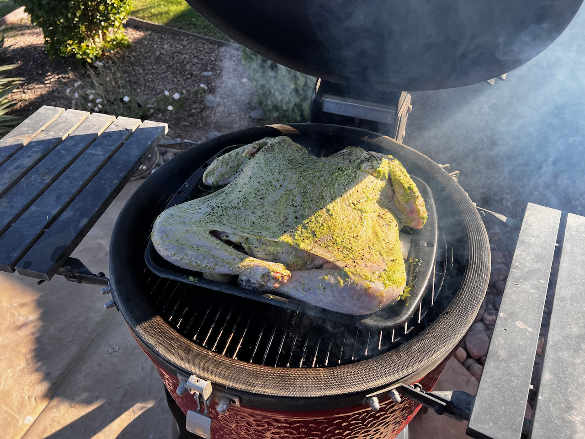
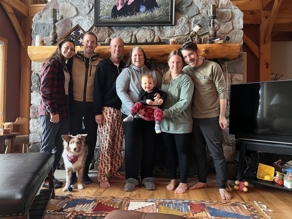
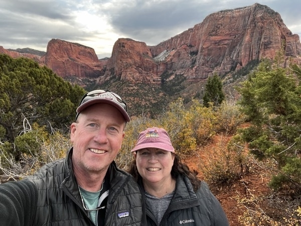
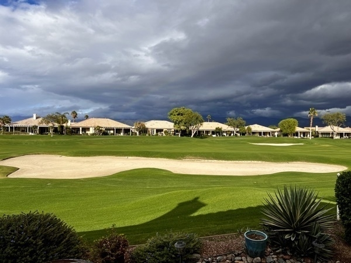
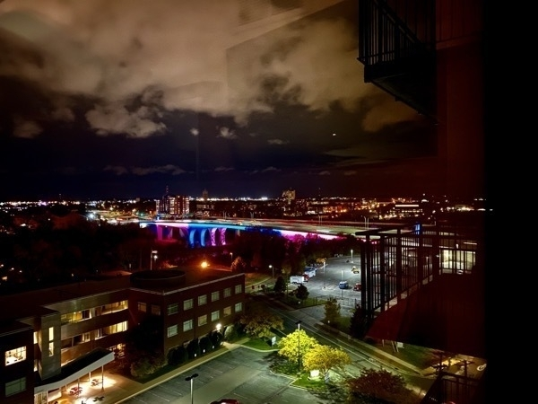
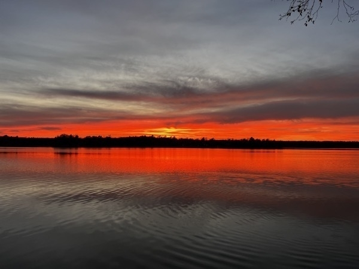
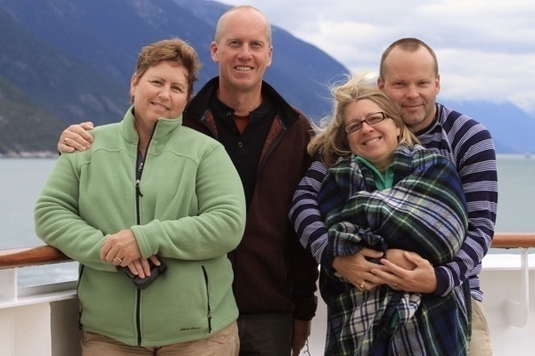

This micro.blogvember experience is great motivation for returning to other open web systems I’ve used in the past. Glueing together RSS feeds and pinboard and checking out Read Kit. Looking for a plugin for Strava - or maybe I will write one if necessary!
I have made a commitment to be committed to my commitments, whatever they may be. Especially if one of them is completing the microblogvember challenge.
Our family has developed a nice ritual for Black Friday. Inspired by #OptOutside we don’t do any shopping, but take a nice hike instead. Going to be hard to keep that alive this year with a torn meniscus, but we will see.
Happy Thanksgiving! What is your favored turkey cooking method? I spatchcock it and put it on my kamado joe. It retains all the moisture and comes out very juicy. I’ve dubbed this “Yoga Turkey”

All the Things I am Thankful for
I thought it would be fun to share a text and picture blog post of all of the things I am thankful for! So here goes, the list is pretty long.
My Grandkids!
Although I am still relatively new to the grandpa game, I love Hannes and Maren a ton! If this isn’t the coolest picture of a brand new big brother I really don’t know what is.
My family!
This was taken before number 2 grandkid was conceived, at our lake house in wisconsin. I think the comma after conceived is important…

My Wife
My adventure partner, my companion, my everything! I don’t know who else would put up with me after all of these years. COVID times may have curtailed our ability to see the rest of the world, but it definitely increased our desire to see the amazing country we live in. Get yourself a camper and see the USA! This particular picture was taken at Zion National Park. I could post hundreds of other selfies of us from the USA to Morocco to Istanbul to Vietnam, to every other continent (except Antarctica)!

I am thankful that wherever we are we are happy to be there. We have the amazing fortune to have three homes. I know, it’s kind of embarassing, and soon enough we will not want to maintain three residences.
Indio, California
 We have made so many good friends here in Indio! From the golf course to the pickleball court to the stage! We are so happy here, and look forward to many more years of “retirement” here at HP. Even though we were not with our kids this year we were lucky enough to invite another couple from pickleball to join us for dinner. We often joke that Heritage Palms is “summer camp” for adults over 55, but it is pretty true, there are so many activities and small groups to get to know.
Minneapolis, Minnesota
 When we downsized from our house in Decorah to an 1800 square foot condo in Minneapolis we wer over the moon. Theaters, restaurants, sports venues, mass transit, were all within blocks of us. And when we want to be somewhere else we lock the door, leave the car in the secure, heated garage, and are on our way! COVID made us question the ownership of this particular property, but we love every night we are there.
Luck, Wisconsin

we built our cabin in Luck in 1999 as a place for our family to gather, and I’m happy it has worked out as a place where we gather with our kids and grandkids when we are around. I’m also really happy that this is a place where our kids and their spouses and children gather without us when we are avoiding the cold and enjoying California.
My Career
I’m thankful that I love what I do, and that I control my own schedule. How many people get to do what they love, and get paid for it? How many can do it on their own time schedule? I am the main person behind Runestone Academy, and every day I am helping more than 60,000 students learn math and computer science. But I can still play golf in the mornings with my friends, or ride bike, or play pickleball, or just have a cup of coffee and read the news or watch soccer or do the crossword puzzle.
Our Friends
I am thankful for our friends! Oh! I am so thankful for our friends! I do not even want to start this! But this guy and his wife are our oldest and dearest friends. College roommates, God parents to our kids, travel companions, you name it. This picture was taken on our 30th anniversary trip together. We take a trip every 5 years (sometimes every 4 AND 5 years) to celebrate our anniversaries. I feel like this is such a wonderful and unique tradition.

I am sorry that I have not named everyone that is important to me. That list and post would be much longer. I just started this post on a lark, and have only now realized the gravity of (not) naming everyone. I hope you know who you are and how important you are to me.
The danger of a post like this is that ten minutes from now I will think of something or someone that I missed. I am so sorry!
an update on microblogvember progress, I have made 23/23 days now! This has been fun and has introduced me to a lot of new people. I like this platform.
just for fun, I made today’s microblogvember word “graze” my first guess on today’s wordle. It worked out just fine.
Wordle 521 3/6
⬜🟩⬜⬜🟩
🟩🟩🟩⬜🟩
🟩🟩🟩🟩🟩
This morning we have a frost delay. My tee time is now 9:30 instead of 8:30. A frost delay… you would think that I see ice out my window or at least tiny little crystals on the grass. In the desert a relatively balmy 46 degrees is enough to create a frost delay, but not ice.
Well, game one of world cup 2022 is in the books. I’m looking forward to some conversation about ⚽️ here on micro.blog over the next weeks. It is going to be some early mornings here in Pacific time! PS - I am picking team USA to advance out of their group!
I was saddened to read that elon restored the account of the former guy. I sincerely hope we are not in for a repeat of the insanity!
Watching the celebration of life for Rick Torgerson, who led Luther College and is someone I truly respect and honor.
His son quoted Dr. Seuss: “Sometimes you will never know the value of a moment, until it becomes a memory.” Live Well everyone, enjoy today.
Last fall I rode my bike the length of the Mississippi I only had to change a flat tire five times along the way.

Just curious, who here remembers playing the game “Barrel of Monkeys” when they were a kid? I certainly do. A little searching tells me that before the ironic phrase “more fun than a barrel of monkeys evolved” from a wagon-load of monkeys.

I sent in my absentee ballot after checking it twice. But myvote.wi.gov has no record of me voting in this last election. I am worried that I am a disenfranchised voter. It was a close Senate race and this really makes me mad.
Todays microblogvember word brought back fun memories of choir warmups. “Aluminum Linoleum Aluminum Linoleum” up and down the scale.
Not my words, but these James Taylor lyrics work:
There’s something in the way she moves Or looks my way, or calls my name That seems to leave this troubled world behind If I’m feeling down and blue Or troubled by some foolish game She always seems to make me change my mind
Went to the Margaritaville pickleball tournament this afternoon (Nationals)! I have to adjust my whole concept of what it means to play the game at a high level. It was a great way to spend the afternoon and I’m totally inspired to hit the courts.

Just checked the News - I like the Time headline: “Good Job America. You Didn’t Destroy Democracy.” Truly a relief, as I was honestly worried. There are more elections ahead and nothing is certain, but our democracy is something we should always strive to preserve.
I have a suspicion that supper will be a little late since I forgot to take the pork out of the freezer. I’m thinking that I can make up a lot of lost time by using the instantpot. We are having carnitas, in case you are interested.
Continuity camera inspired the purchase of a stand for what looks like another mini-display next to my main monitor. I kind of wish universal controls worked on the iPhone. – Ummm the array of pain relievers on display on my desk may require further explanation.


This post has a little bit of everything: sunshine in the foreground, ominous clouds over Joshua Tree, and even a faint rainbow that I didn’t notice until I looked at this pic!


I was certain that the fix I pushed out midweek yesterday to my servers was safe. But I was wrong. Not to worry, I made everything right in a couple of hours with another update.
I can never remember how to spell consensus… my brain is convinced that there is a second c in there somewhere.
I am afraid that my recent knee / MCL injury is giving me too much insight into what its like to get older. Hopefully the MRI on thursday will be good news and I’ll be back on the pickle ball courts and riding my bike sooner rather than later!
I have enjoyed my first few days trying to use micro.blog regularly. It feels good to be out of the echo chamber that is twitter.
I used to be exempt from this kind of injury and silliness but darn, my first day back at pickleball and I have to ice my knee. I can think of a lot better uses for those ice cubes!

Today’s Microblogvember word admiration made me stop and recall some of the people I admire and those who have influenced the arc of my life. Here is an archived post about Three influential teachers that shaped who I am today.
For today’s Microblogvember challenge I will engage in a little shameless self promotion. Runestone Academy has high quality interactive textbooks for Math and CS, all of have an open source license, either CC or GNUFDL. – Democratizing textbooks for the 21st century.

I’m very happy to announce that Runestone and PreTeXt have received an NSF grant for “sustainable open source ecosystems!” Read more about it on Runestone News
I must say that I cut quite a dashing figure at last night’s black light party!
I think I’m off to a good start for microblogvember.

Westward Ho!
Instead of camping our way to California this Fall we decided to make it a four day drive. We stayed in, gasp, hotels! This is really our first driving trip where we have used hotels since the pandemic. The verdict? Its nice to pull your accommodations with you!
Our first night was a very nice lodge in Spearfish Canyon South Dakota. Although the lodge was nice it was kind of a bummer because we had a nice hike planned, but I had injured my foot just a couple of days before we took off and I couldn’t walk more than a few yards without a lot of pain.

We did see some pretty cool sheep on the hillside!
We left at O-dark-thirty on day two of our adventure and had the pleasure of scraping ice off our windshield for the first time in a very long time! Today’s drive would take us across Wyoming to a lodge just outside of Dutch John Utah. The area is better known as Flaming Gorge. It was very pretty but our lodge was quite remote and felt even more so because we were clearly in the after season. Only one restaurant in the area was open.

Even thought it was isolated, we had a very pretty view out the picture window of our cabin. Here is a nice Sunset shot!

And to follow up, here is a sunrise photo from the same spot.

A long drive down I 15 brought us to Cedar City Utah for our third night. We headed up to Brian Head, a ski area and did a short little hike. My foot was feeling better by this time, but we still didn’t want to do too much. I love this shot of the show against the beautiful red rock! Our hotel was a Baymont tonight, and I’m not sure why, but the hotel had a some special “mini-rooms” even the door was about ¾ of a normal width. This was our room for the night. The saving grace for the hotel was that it was near a brewery and a really excellent pizza place! I had a chicken pizza with white sauce and pistachios! Truly amazing.

Our last day was the final push to Indio. But we made a quick stop at Kolob Canyon to take a short hike. Maybe some of the most spectacular views yet.


This was a great way to do the trip out this year. We averaged about 6-7 hours of driving a day with time at the end of each day for a short hike or some site seeing.
Long wait in the middle of nowhere today. On the highway with no cell service. When we finally got to go we learned the source of the stop. We are thankful.

The journey home starts today! One night in Vegas Baby! Specifically the Las Vegas RV Resort. Probably the largest RV park we have ever stayed at and hardly a tree in site, just campers parked next to each other as far as the eye can see.

02 Bemidji to Brainerd — My First Century
02 Bemidji to Brainerd - My First Century
Yesterday the ride from Itasca to Bemidji turned out to be shorter than expected by 10 miles. Today’s ride turned out to be longer than expected by a good 10 miles. Yesterday started out with a flat tire after only 10 miles. But after the flat the ride was easy and interesting. I crossed the Mississippi “river” several times.

Today began bright and early with a 6:40AM departure from our campsite at Lake Bemidji State Park. The temps were cool, and a stiff breeze out of the south kept me feeling good. Later I would come to appreciate that breeze less and less and the temperatures rose and my legs got more tired. Early in the ride you cross the Mississippi as it exits from Lake Bemidji.

After that, the Paul Bunyan trail does not cross the mississippi like the Mississippi River Trail, but is an official alternate for the MRT, almost all of is on abandoned rail beds and is pretty flat. Everything was very pretty with the morning light.

except for one section around Walker (about 50 miles in) that was not very flat, and came at exactly the wrong time in my ride.
At the 79 mile mark Jane was waiting for me with Lunch! It was about 20 miles further than I was ready for it, but that is part of what this first leg of the journey is about. Figuring things out, learning what gear we need and what my limits are.
After lunch my legs were still feeling tired, and the wind kept getting stronger and stronger out of the south. Also less of the trail was tree lined so that made the breeze and the sun both stronger.
I made it to the 100 mile mark!

Unfortunately after making 100 it was clear that I still had at least 20 miles left to go. At that point I knew I could make it to Brainerd, but I was probably not going to make it to our campsite south of Brainerd for the night. That is why we have the truck!
Now I’m sitting in the camper writing this post and encouraging my legs to recover their strength for tomorrow. Tomorrow and Thursday are much shorter 68 miles tomorrow and 58 miles on Thursday. Should be a piece of cake!
Prelude (Day 0) Mississippi Headwaters

We had a lovely 20 mile ride around Lake Itasca planned for today with a stop at the headwaters of the Mississippi. As the sign says, 2552 miles! That is roughly the length of our journey, in three parts — Its a long way, but at least it is downhill! For those who don’t know what I’m going on about, here is the story.
Sometime earlier this year I said it would be fun to ride the Mississippi from start to finish. It turns out there is a popular route known as the Mississippi River Trail. Its not a bike path but an established route of trails and roads leading from Itasca State Park in Minnesota all the way to the Gulf of Mexico. I’ll be riding my bike and Jane will be riding a bit, pulling the camper, hiking and providing support.
Part I is the ride from Itasca to Minneapolis. This will take place Monday through Thursday this week. It features my first 100+ mile day from Bemidji to Brainerd on the Paul Bunyan trail.
Part II is the ride from Minneapolis to Lansing Iowa. This will be three days starting Labor Day. We’ll end up camping in Decorah prior to Josh and Rachel’s much delayed wedding celebration with friends and family. All fully vaccinated, we hope.
Part III will be from Lansing to the Gulf starting October 4th. We will be back at Luther for our 35 year class Reunion and when that is over we will take off down the river. Most days will be 60 - 70 miles but as we get further south and the route gets flatter I’ll have a few 100+ days.


Our ride today was not what we expected since the wilderness road was closed due to downed trees and a high fire forrest fire risk 🌲 🔥. So we ended up doing more of the ride on the wonderful state park trails.
Tomorrow I’ll rest my legs for a day and then Monday I will take off for Bemidji.


Three Days in Chelan
Well, I think it is time to head East. When we started making our egg scramble for breakfast this morning the sausage had mold on it, and so did one of our bags of shredded cheese! Its nothing that a stop at a grocery store won’t fix, but we are both ready anyway. We’ve been on the road with the camper for 20 days, and it has been quite a trip.
The last few days have been really wonderful. We got to park the camper at Lake Chelan State Park and hang out with our friends Jim and Karen for three days! Jim and Karen are experts on the Chelan and Leavenworth areas having both lived in the area before, so they had lots of great outings planned for us.
Day One, we met at the Wal-mart parking lot to leave the camper until check-in time and headed out for a wine tasting and lunch! We found a great location at Benson’s who also served a great local wood fired pizza. Check out this amazing view of Lake Chelan from our lunch stop!

That pretty much captures the area in a nutshell. Everywhere you go you are treated to amazing views of the lake. By the time we finished lunch and our tasting it was late enough to move the camper to the campground.

With the camper situated, we were able to explore the south side of the lake and see the Holden guest house that Jim helped build many years ago. We had another pre-dinner wine tasting at the Tsillan (pronounced Chelan) winery. The weather was HOT 95+ degrees. The wine was also really good. I’m bringing home bottles of Rosé and Pinot Grigio. Dinner was in downtown Chelan at Campbells, followed by a campfire back at our site. There were two big RV’s next door to us, each with a gaggle of kids and their bikes. The kids were riding their bikes back and forth, no hands, getting as close as they could to Jim and Karen’s car parked in front of our camper! This was making both Jim and Karen very nervous, and they were ready to make the drive back to their place anyway, so they left. Meanwhile the biking and the squeaky bike brakes continued long after dark! We laughed that we are edging ever closer to those old people that yell “get off my lawn!”
Tuesday morning, Jim and I headed out for a ride up the lake. It was perfect weather and a great morning for a ride. My fat tire had to work hard to keep up with Jim’s road bike.

We had bratwurst for lunch at the campground, and then Jim and Karen took off to take care of some family things. We were also awaiting the arrival of Jane’s aunt Joanne and uncle Dale. Her cousin David drove them up from Yakima to see us. This is Jane’s last remaining aunt and uncle and we haven’t seen them in years so it was great to see them and have a chance to chat.

Wednesday, the plan was to head to Leavenworth, where Karen’s parents and cousins live. Karen had a favorite hike for us to do, and Jane’s cousin runs Visconti’s restaurant there. Leavenworth has been remodeled to resemble a Bavarian mountain village and is a charming little town. We enjoyed a lunch at a local Mexican restaurant (Yes, I know, not very Bavarian, but we just had brats for lunch on Tuesday). We visited the local fair trade store that was owned by Karen’s parents as well as the hat shop and toy shop owned by her uncle.

Downtown was really hot, so we headed up the mountain to take a hike along the Icicle river. The snow melt is fast and furious in the mountains so the rivers are really flowing.


Although the water was very cold and the temperatures up on the mountain were much cooler we were still all pretty hot and tired after the hike. So we showed up for our reservation an hour early. No problem we enjoyed some more local wine and eventually ordered our meal.
Karen was going to spend a couple of days with her parents, helping out around the house, so we dropped her off before making the hour long trek back to the campground. By then we were tired so we just spent some time picking up the campsite and preparing for our morning departure.
The campsite was very tight, and in addition, there was a car parked right across from our site, making our exit very narrow. after getting the trailer hooked up Jane nearly had us out of the site except for the large rock blocking the corner of our site. I had tried to move it earlier in the morning in preparation for our exit but couldn’t move it. Luckily there was a burly young man doing his dishes at the water faucet on the edge of our site who said “I can move that rock for you”. together we rolled it over and we were able to get the camper out. Our next move was to wake up the tenters that owned the parked car and ask them to move it. Thankfully that was not needed.
Snowy Adventure
The North Cascades (America’s Alps) is a beautiful stop on our journey. Not to mention the warmest temperatures (72 degrees) since Indio! It is also Memorial Day weekend, and the place is a zoo! Cars are everywhere, people are everywhere. Its almost as if friends and families have been freed from a pandemic and are now happily gathering together again after more than a year of quarantine and social distance.
Case in point, our camping neighbors, with double the allowable tents on their campsite, two dogs (Luna and Lance) and countless children. My guess from looking at all of them on the trail is that they are all young tech workers who have made the trek to the National Park to enjoy a holiday together. I really wanted to poll everyone who passed us on the trail “Computer Science degree?”
After arriving and getting the camper situated we decided to hike the Thunder Knob Trail. The info Jane had on the trail said it was 425 feet of elevation gain. The park brochure said 625 feet, but my feet and legs were claiming even more! We had about a quarter of the trek up left to go when a pair of young girls skipped past us and announced “You have a LONG way to go to get to the top!”. Thanks for killing my spirit I muttered. It would not be a proper vacation without at least one hiking turning out to be way more challenging than you thought.

Nevertheless it was a spectacular view of Diablo Lake. The kind of place you could just sit and contemplate the beauty of nature, and remind yourself that there is a lot of good in our country.

It was a perfect night for a campfire🔥 unfortunately we were lacking 🪵 🪵 The National Park prohibits gathering 🪵 as well as the sale of 🪵. We should have bought 🪵 in Marblemount from one of the friendly people on the side of the road! We made due with what our predecessors had left us in the fire ring and a little bit of kindling that was laying next to the 🔥 pit. The leftovers consisted of three large 🪵 that refused to really burn. Jane did her best to whittle down the 🪵 into smaller chunks but really only made more kindling. We managed to enjoy it all for a couple of hours anyway.

This morning we had many options! Jane had a very long list of hikes we could do. We decided to head for the furthest one called Blue Lake. Alas when we arrived at the trailhead the lot was still under many feet of snow. We hiked through the lot and attempted to find the trail itself, which did not look at all inviting.

OK, for plan B we drove back toward camp thinking we would stop at Rainy Lake. It looked snowy as well, but the sheet we got from the ranger said that it was “A wheelchair-accessible paved trail to a mountain lake” How hard could it be? Our first clue should have been the couple and their dogs on skis! It turns out that when a wheelchair-accessible trail is under anywhere from 5 to 20 feet of snow it makes for a lot of ups and downs! Lots of slippery climbs and feet sinking six inches into the snow! In short, it was a snowy adventure (in shorts!) just trying to figure out where the trail was.


If Jane hadn’t downloaded the trail on her All-Trails app we would never have found the lake! We would trek a ways forward then stop and consult the map. inevitably we were off to one side or the other of the official trail. We were completely by ourselves, and I immediately thought about the warnings that there were bears and rattlesnakes about. Well, I was not worried about rattlesnakes! I wasn’t really worried about 🐻 either but the thought did cross my mind.
After all of our work to get to the lake it was definitely worth it, all the more so because there were only a few people there. A real contrast to the campground!

By the time we finished the hike Jane’s feet were soaked! We were both way more worn out than anyone would ever imagine after a simple two mile hike on a wheelchair-accessible trail 😂 On the way back to the campground we discussed our options. Jane had made a second reservation for tonight at Pearrygin State Park, in case it was too cold in the National Park. Its not cold, but we decided that we might as well make another 60 miles of progress this afternoon as another hike was not in the cards. Who knows how busy this campground will be but we might as well find out.
It turned out great! We have a great site right next to the lake, and it was a beautiful night to grill some steaks and enjoy a campfire. This time we stopped and supported the “neighborhood kids” outside of Winthrop by purchasing several bundles of 🪵 for our upcoming 🔥.
Deception Pass State Park
Yesterday was laundry day and hang around the park day. Jane headed into Oak Harbor to wash a load of clothes while I stayed at the camper to catch up on a some emails and Runestone issues. She brought me donuts.
To work off the donuts we decided to do a nice long hike to the bridge and up to the summit. It was a great hike and a good chance to break in my new hiking boots. I don’t like them as much as the Salomon’s so I think there will be another trip to REI when we get back to Minnesota.
Here is a view of the bridge from the north beach. One fun fact about this bridge is that it was built by the Civilian Conservation Corps between 1934 and 35, one year to build the bridge! It has been a two year project just to repaint the bridge in 2020/21! I’m not sure I’d call that progress.

Here is another shot from the bridge itself.

After the bridge we had a little more climbing to do to reach the summit where we had a fantastic view of Whidbey Island, the San Juan Islands and much more.


Back at the campsite it was fajita night. With chicken fajitas cooked over an open fire, and some Kirkland margaritas.
Jane Can not Control the Weather
This morning we woke up to a bit of broken sunshine at our campground. The water was as smooth as glass. A bit of rain left over from last night was dripping down on the top of the camper. We got packed up and headed out to Port Townsend to catch the ferry to Whidbey Island. When we arrived the man working the booth warned us that due to high winds and the tides today there was a pretty strong chance that our ferry would not run as scheduled. A quick check of the weather app confirmed that the high winds were due to get worse as the day progressed. Sure enough as the time to board came closer the announcement came that the ferry would not run. A quick consultation with the man working the booth advised us that Kingston was not having any of these problems and that we should head there as the next ferry was also likely to be cancelled.
So, here we are at the Kingston Ferry waiting our turn to load. As we wait I noticed a ferry worker measuring the clearance of all of the campers. Jane had read that at low tide there can be an issue with getting on and off the ferry if you don’t have enough clearance. But, we are safely on the ferry now ready for the trip across. When we arrive in Edmonds we will take advantage of our new drive to stop at REI to exchange my defective hiking boots, then hit Costco to refill the tank and finally head to our campground. What should have been just an 80 mile day is turning into 160 mile day. The campsite was a bit of a challenge to get into and get the camper level, but we are getting quite good at it now.

For dinner we had a real treat! We met Jane’s cousin Jeff and his wife Barb, whom we met a few years ago in Seattle, and another cousin David and wife Mary for supper tonight at Nell Thorn’s Waterfront Bistro in the nearby town of La Conner. Yum!

I had a delicious crab pasta, but my favorite was the crispy polenta with gorgonzola sauce! It might be the richest thing I’ve had to eat in a year. We had a wonderful dinner and great conversation. We also learned that another of Jane’s cousins owns a restaurant in Leavenworth called Viscontis. I hope we get the chance to try it as the reviews and food look very good!

On the way back we were treated to a bit of rain and a beautiful sunset.

More Photos from today and 1986
This morning we went through all the weather in about 30 minutes! We started out at our Salt Creek campsite, where the forecast was for 60 and overcast most of the day. But as we climbed toward Hurricane Ridge we got into the low clouds and rain. The temperature was dropping quickly as we went up, but then we emerged from the cloud into beautiful bright blue sunshine and we had the joy of looking down at the top of the clouds!

In our fun quest to retrace our steps were trying to find the place where we took a couple of pictures on Hurricane Ridge. I apologize for the short shorts! It was the 80’s after all.


Here are today’s photos:


We did a little more hiking to enjoy the spectacular views!

Then we were off to find Marymere falls!

I’m not sure who took the photo in 1986, but they managed to make it a little blurry. This time it was very sweet. We were getting ready to do a selfie at the falls when the young couple behind us asked if we wanted them to take our picture. Sure, I said, we are trying to recreate this photo from 35 years ago I said. It is from our honeymoon, Jane added. This young couple had just gotten engaged. So they took our picture and added that 35 years was a long time and certainly something to aspire to. Oh my.

As we were headed back down the trail, I noticed that the bridge we had just crossed looked pretty familiar. It is the bridge below.

With my darker clothes it was impossible to even see me, when zoomed out. So here is a slightly zoomed in version of the same picture.

And last but not least, here is Jane crawling through the tree. As John Carlis used to say, never let the facts get in the way of a good story, so we are going to say that this is the exact same tree, with 35 years of growth and reshaping of the hole!

The opening has changed, but Jane’s sense of adventure is still the same as it always has been!

Ok, here ends the nostalgic photos from 1986. We have had a blast the last two days trying to find the right spot and angle. It is amazing how similar some things are and how much some things have changed! Ruby Beach is nearly identical to what it looked like 35 years ago. The moss covered log at Marymere is nearly identical! Yet the branch that was sticking out and up is gone with no sign of it.
Tomorrow we leave the peninsula and take a ferry to Whidbey Island!

Crater Lake
The plan had been to bike around crater lake. Then we learned that the road was not open yet. Although it is May 22nd, they had not yet opened the rim road due to heavy snowfall this year. The Rim hike was also closed due to snow, so we ended up walking the part of the road that was open to hikers — Discovery Point to the Wizard Island Overlook.

It was cold! We are not used to temperatures in the 30’s! I personally did not pack well for this trip. I usually bring way too many cold weather clothes and not enough warm weather. But this trip is the opposite. So I have on my biking base layer, a long sleeve T shirt, a vest, a sweatshirt, and my rain jacket! After our hike we did stop at the gift shop and I scored a nice wool camping shirt. That will help, but I think I’m going to miss my puffy jacket.

We did enjoy some great sights on our two mile hike.


After our Crater Lake hiking we stopped at Beckies for lunch. Its amazing how smells bring back memories. Sitting outside this walkup restaurant waiting for my burger I was transported back to the drive-in in Storden Minnesota. Yeah, its just hot grease, but still.
On the way back to the campground there were two more opportunities to see the beauty of the Rogue River.


Meanwhile, back at the campground, the plan was to make some soup for supper in the instant pot. But it seems that the electrical cord has gone missing! Another stop at Wal-Mart or best buy I guess…. I don’t know where it could have gone as it has never really left the camper, and I’ve used it at least once before. But we looked everywhere, and by we I mean both Jane and I so it wasn’t just “man looking”
Tomorrow we have a fairly long day heading North to Cascade Locks.

The Avenue of the Giants
8:00 This morning we are getting an early start and I’ve decided to record this in real time, or at least near real time. We have another 50 miles on Highway 1, so more slow going on twisty winding roads. I’m writing this as we go today. We have left the coast and are amongst the redwoods. The road is super narrow but lined with trees, its just beautiful the way the sunlight filters through creating shadows all around us. There are few turnouts , so no real opportunities for taking photos.

9:25 still a few more miles to go before we get to the 101.
9:39 Just saw our first advertisement for the “Drive Through Tree”! We will not fit, but hopefully we will see it.
9:45 We are on the 101, but a sign advises us that there are sharp curves for the next 9 miles and we are advised to slow down. 😜. Lots of tourist traps for “tree houses” and Confusion Hill House, and the “one log cabin!” An entire log house made out of a single log. It looks like more of a hobbit house or a culvert with a door, but whatever.
9:52 We are on the freeway, at least for a short time…
10:03 - the legend of bigfoot! complete with three highway patrol officers with their lights flashing. I guess we will not stop to buy any bigfoot souveniers.
10:20 We are now on the Avenue of the Giants. We are heading for Founders Grove to make a stop and enjoy the Redwoods for a bit. Some of the Redwoods in founders grove are over 350 feet tall!

Lots of pictures looking straight up today!

11:08 Just finished the nature walk at the visitor center. Amazing! There is no way our pictures are going to capture the size and beauty of these trees!


12:00 Just finished our walk at Founders Grove! Amazing, Amazing, Amazing. The Founders tree is 349 feet tall! More than a soccer pitch! The diameter is over 12 feet and the circumference just over 40


12:10 pull over by some big trees for a picnic lunch along side the road. A most picturesque lunch spot!

12:24 back on the road — 2:17 minutes left to our destination. The rest of the day will be on Hwy 101.
1:30 Gas stop in Eureka! Last stop before our campsite…
2:25 Arrived - Prairie Creek Redwoods State Park
2:45 We have determined that our campsite and our camper are incompatible. The site is steep and it is impossible to get our camper anywhere near level. Jane seeks out the Ranger to see if there are any cancellations.
3:00 they have two possibilities for us. After a little walk around the campground we determine that one is super small, and level, but there would be no room for the truck. Luckily the other will work great for one night. Its a bit exposed with the slide hanging right out to the road. But most sites near us are already occupied so we don’t expect much traffic.
3:45 we are finally in our campsite with the trailer leveled up and the solar panels plugged in.
4:00 we take off for a hike, having abandoned the idea of a 20 mile bike ride.
4:20 we arrive at Fern Canyon for our hike. It is for the best that we didn’t try to ride our bikes here after all. Its a steep one lane road with the barest of turnouts for when you meet someone. Thankfully the hike makes it all worth while. Fern canyon is a coastal bluff left behind by the retreating oceans years ago. The steep walls of the bluffs are covered with ferns, and the little steam running down the middle makes for a beautiful hike. Again the pictures surely do not do it justice.


5:25 depart Fern Canyon for Lady Bird Johnson Grove. This is completely different than Founders Grove as it is higher in elevation, on a ridge top where the winds challenge the trees all the time. Its great that this is named after Lady Bird Johnson, who fell in love with this grove when she came to dedicate Redwoods National Park in 1968, but it is pretty humbling to consider that when many of these trees have been here for 1,000 years!


7:00 Back at the campsite! Time to make some dinner and relax. Tomorrow we head to Crater Lake where we will stay for two nights.
El Capitan State Beach - The Adventure Begins
This morning began with Coffee and a quick, but promising, Zoom meeting with the folks from ProjectSTEM.org, about how Runestone and ProjectSTEM can work together. After that energizing call I quickly transitioned to camper loading mode, before heading out for our final nine holes of golf with the couples league at 9AM. In the meantime the guys showed up to start laying the Pavers  in our new courtyard area! Talk about a busy last day in the desert!
in our new courtyard area! Talk about a busy last day in the desert!
Our latest journey will take us up the california coast following Highway 1 and 101, through Oregon and into Washington state where we will retrace the steps of our honeymoon from 34 years 11 months ago! We’ll call it 35 years. when we finish our visit to the Olympic Peninsula we’ll head east and meet our friends Jim and Karen in Chelan Washington, and then make a beeline for Minnesota across the barren north! We are looking forward to 3 weeks of beautiful scenery, eating seafood out, hiking, biking and our little camper.
We are now experiencing LA traffic, sitting on the Ventura HIghway, going slow., the free wind is not blowing through our hair as we have the AC on. We also haven’t been hit by any purple rain, so we got that going for us. Only 98 miles to go to our campsite but the estimated time of arrival keeps holding steady so I guess all this traffic was anticipated. I’m happy to report that the temperature here on the 101 is a good 20 degrees cooler than when we left Indio just a few hours ago. That is down 20 degrees from 100!
We are now happily in our campsite at El Capitan State Beach! It is only 65 degrees here so its starting to feel like Minnesota, but we are so happy to be on the road and are already enjoying this new adventure!  We got the camper set up and went for a short hike!
We got the camper set up and went for a short hike!  Next up happy hour, dinner, and then some rest after a very busy day.
Next up happy hour, dinner, and then some rest after a very busy day.


Katie Kukulka, an information officer with the California Energy Commission, takes photos during a tour of the Ivanpah Solar Electric Generating System in the Mojave Desert in California near Primm, Nev. Feb. 13, 2014. The project, a partnership of NRG, BrightSource, Google and Bechtel, is the world’s largest solar thermal facility and uses 347,000 sun-facing mirrors to produce 392 megawatts of electricity, enough energy to power more than 140,000 homes.


Glad to see the official announcement of Apple’s “Spring Loaded” event next week. I’ve been living with a cracked screen on my iPad long enough.
A really nice round this afternoon at Heritage Palms!

And yes, I can still put it in the water from here…
A Winter in Indio

I never thought of myself as a Snowbird, but even with COVID-19, our second Winter in Indio is amazing! In college we used to joke about getting condos in the same building when we got old, so we could party together every night and have fun after we had worked hard and raised kids and … But who knew that something like that would actually start to happen?
Here we are in our mid-50’s; living a retirement lifestyle, while still working a balanced workweek. What do I mean by that? Well here is our basic daily schedule. Of course this may vary due to visitors or other events.
- 5:30 AM wakeup, wait 5 minutes for the water to get hot and then get out of bed and make a delicious pour over coffee to start the day. Read the news and do Sudoku or The NY Times crossword until 7:00AM
- 7:00 AM Be productive.
- 8:00 AM play pickleball — unless I have an early tee time on Monday or Friday with my wonderful TGIF group.


- 10:00AM Be Productive
- 2:00 PM If it is Jan — March, take a bike ride (unless I’ve already played pickleball and golf!). If its April or May it may be too hot to ride now.

- 3:00 PM — Occasionally this is happy hour time over zoom with friends back in the midwest.
- 5:00 PM almost always happy hour out here. Unless you are still on the course for a late round of golf.

- 6:00 PM cooking time!!!
- 8:00 PM Done with cooking and dinner time to veg with a movie or TV show. If it was not COVID times we could imagine playing cards with any number of couples we have met! Our favorite shows are:
- Ted Lasso
- Chicago Med/Fire/PD
- The Voice
- Handmaids Tale
- For All Mankind
- Mrs Maizel
- 10:00 PM Bed Time. — read until you can’t anymore, then fall asleep.